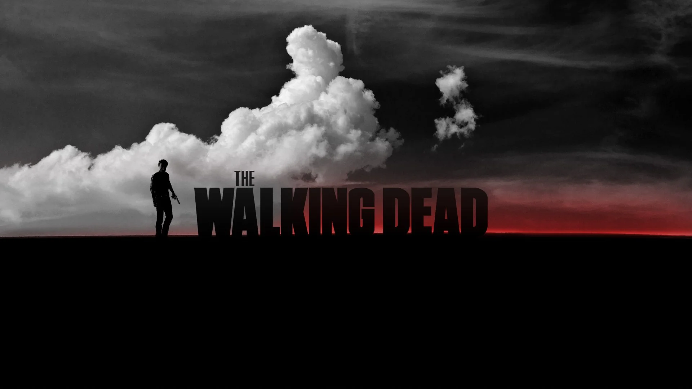

First Episode: Days Gone Bye
Released: October 31 2010
Last Episode: Rest In Peace
Released: November 20 2022
Creator: Frank Darabont
Based On: The Walking Dead (comic series by Robert Kirkman)
Genre: Horror, Drama, Post‑Apocalyptic, Survival
Overview of The Walking Dead
AMC’s The Walking Dead began in 2010 with Days Gone Bye, where Rick Grimes wakes from a coma to find the world overrun by the dead. The early Seasons (1–5) became known as the show’s Golden Age, focusing on survival, morality, and the group’s evolving family dynamic. Seasons 6–7 marked the Peak but Controversial Era, introducing Negan and shifting the tone toward darker, more brutal storytelling. Over the years, the series expanded its world with new communities, wars, and shifting leadership as characters like Daryl, Carol, and Maggie took centre stage. The final season, Rest in Peace, closed the main story while setting up spin‑offs, ending the original series with themes of rebuilding, hope, and the enduring fight to protect their community.
The Golden Age (Seasons 1–5)
Widely regarded as the strongest era of the series, Seasons 1–5 delivered gripping survival drama, unforgettable character arcs, and some of the most iconic moments in television history. From Rick waking up in the hospital to the fall of the prison and the journey to Terminus, this era defined what made The Walking Dead a global phenomenon.
- Season 1 – Rick awakens; the world has fallen
- Season 2 – Hershel’s farm and Shane’s downfall
- Season 3 – The Prison arc and The Governor
- Season 4 – The fall of the prison; the road to Terminus
- Season 5 – Terminus, Alexandria, and the group’s evolution
Peak‑but‑Controversial Era (Seasons 6–7)
Seasons 6 and 7 are considered peak in terms of intensity, production quality, and cultural impact — especially with the introduction of Negan. However, they also sparked controversy due to graphic violence, character deaths, and tonal shifts that divided the fanbase.
- Season 6 – The Wolves, Alexandria’s fall, and the buildup to Negan
- Season 7 – Negan’s reign, Glenn & Abraham’s deaths, and the Saviors arc
Why These Seasons Stand Out
- Strongest writing and character development
- High emotional stakes and moral dilemmas
- Iconic villains (The Governor, Negan)
- Massive cultural impact and global viewership
- Some of the most memorable episodes in TV history
Spin‑Offs & Expanded Universe
- Fear the Walking Dead
- The Walking Dead: World Beyond
- Daryl Dixon
- Dead City
- The Ones Who Live (Rick & Michonne)
Sources
- AMC Official Walking Dead Page
- Comic Series by Robert Kirkman
- Variety – TWD Franchise Coverage